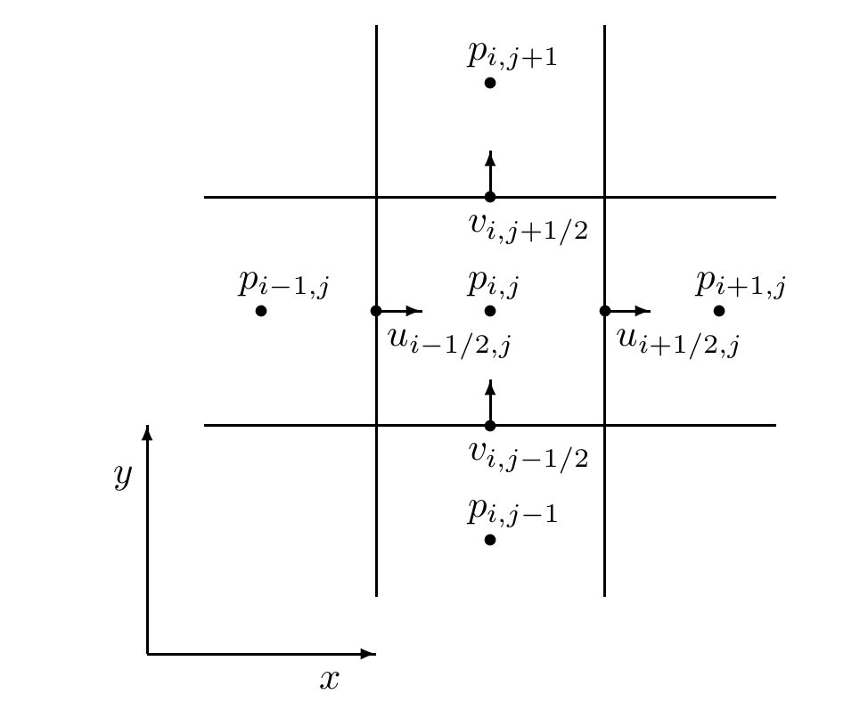
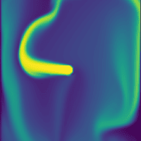

Fluid Simulation I: Simulating Smoke Using the Eulerian Method
In this series, we will explore the fundamentals of fluid simulation, focusing on substances like smoke and water. In this first post, we introduce the mathematical framework for describing fluid behavior and develop a classic technique—the Eulerian Method—for simulating fluids. We use smoke as a particular example to illustrate the details of this approach.
1 Depiction of the Fluid
We describe fluid as a field, where every position \(\mathbf{x}\) is associated with physical quantities, such as velocity \(\mathbf{u}(\mathbf{x})\) and density \(\rho(\mathbf{x})\). By referring to “every position”, we implicitly invoke the assumption of continuity: at the macroscopic scale, the medium is fine enough that every point is well-defined; yet at the microscopic scale, it is large enough to average out the complexities of quantum effects and the detailed motions of molecules. Thus, the properties of the bulk material can be described by continuous functions, and their evolution can be studied using calculus.
1.1 Conservation of Mass
Consider any fixed region of space \(\Omega\) in the fluid. The mass of the fluid in \(\Omega\) is \[M = \iiint_{\Omega} \rho \, \mathrm{d}V.\] Based on conservation of mass, the rate of change of \(M\), as fluid flows in or out of \(\Omega\), is given by the integral around the boundary of the speed at which mass enters or exits, since mass cannot be created or destroyed inside \(\Omega\): \[\frac{ \partial M }{ \partial t } = - \iint_{\partial \Omega} \rho \mathbf{u} \cdot \mathbf{n} \, \mathrm{d}S.\] Here \(\mathbf{n}\) is the outward-pointing normal. Expanding \(M\) and applying the divergence theorem, we obtain \[\iiint_{\Omega} \frac{ \partial \rho }{ \partial t } \, \mathrm{d}V = - \iiint_{\Omega} \nabla \cdot (\rho \mathbf{u}) \, \mathrm{d}V.\] Since this is true for any region \(\Omega\), the integrands must match: \[\frac{ \partial \rho }{ \partial t } + \nabla \cdot (\rho \mathbf{u}) = 0.\] This is called the continuity equation.
1.2 Conservation of Momentum
To analyze the behavior of the fluid, we consider an arbitrary blob of fluid \(\Omega(t)\) as our subject. The momentum of the blob can change in two ways: through body forces applied to every point in the region, such as gravity, and through stresses that neighboring blobs or other continuous material exert on the boundary. A common stress in fluid mechanics is pressure, which arises from the collective force of innumerable particle collisions at the microscopic level. \[ \iiint_{\Omega(t)} \rho \frac{ \mathrm{D} \mathbf{u} }{ \mathrm{D} t } \, \mathrm{d}V = \iiint_{\Omega(t)} \rho \mathbf{f} \, \mathrm{d}V + \iint_{\partial \Omega(t)} \boldsymbol{\sigma} \cdot \mathrm{d}S \] You may notice the notation \(\frac{ \mathrm{D} \mathbf{u} }{ \mathrm{D} t }\)—the material derivative. Why do we use this notation?
There are two approaches to tracking the motion of a continuum: the Lagrangian viewpoint and the Eulerian viewpoint. In the Lagrangian viewpoint, each point in the fluid is labeled as a separate particle, with a position \(\mathbf{x}\) and a velocity \(\mathbf{u}\). In the Eulerian viewpoint, we instead look at fixed points in space and observe how measurements of fluid quantities, such as density, velocity, temperature, etc., at those points change over time. To illustrate, imagine a weather report: in the Lagrangian viewpoint, you’re in a balloon floating along with the wind, measuring the pressure, temperature, and humidity of the air around you; in the Eulerian viewpoint, you’re on the ground, measuring the properties of the air as it flows past.
Let’s look at how these two viewpoints relate mathematically. Start with a Lagrangian description: there are particles with positions \(\mathbf{x}\) and velocities \(\mathbf{u}\). Consider a generic quantity \(q\); each particle has a value for \(q\). The function \(q(t, \mathbf{x})\) tells us the value of \(q\) at time \(t\) for the particle at position \(\mathbf{x}\)—an Eulerian variable, since it’s a function of space, not of particles. How fast is \(q\) changing for the particle whose position is \(\mathbf{x}(t)\) as a function of time? By the chain rule: \[ \begin{align} \frac{\mathrm{d}}{\mathrm{d}t} q(t,\mathbf{x}(t)) & = \frac{ \partial q }{ \partial t } + \nabla q \cdot \frac{\mathrm{d} \mathbf{x}}{\mathrm{d}t} \\ &= \frac{ \partial q }{ \partial t } + \nabla q \cdot \mathbf{u} := \frac{ \mathrm{D} q }{ \mathrm{D} t }. \end{align} \] This is called the material derivative. So now we can answer the question above: we describe the fluid’s quantities in the Eulerian viewpoint, but when deriving the conservation of momentum, we need to treat the blob as a particle, i.e., in the Lagrangian viewpoint.
Continuing, using the divergence theorem, we obtain \[ \iiint_{\Omega(t)} \rho \frac{ \mathrm{D} \mathbf{u} }{ \mathrm{D} t } \, \mathrm{d}V = \iiint_{\Omega(t)} \rho \mathbf{f} \, \mathrm{d}V + \iiint_{\Omega(t)} \nabla \cdot \boldsymbol{\sigma} \, \mathrm{d}V \] Since this is true for any region \(\Omega(t)\), the integrands must match: \[ \frac{ \mathrm{D} \mathbf{u} }{ \mathrm{D} t } = \frac{ \partial \mathbf{u} }{ \partial t } + (\mathbf{u} \cdot \nabla)\mathbf{u} = \mathbf{f} + \frac{1}{\rho} \nabla \cdot \boldsymbol{\sigma}. \] This is called the Cauchy momentum equation (convective form).
2 Numerical Simulation
2.1 Discretization of Time: The Splitting Method
Once we have the equations, we can simulate the fluid by numerically integrating them over time. However, directly solving the equations is difficult because they are nonlinear and coupled. A common approach is to use a splitting method, which breaks down the complex problem into simpler subproblems that can be solved sequentially.
To elaborate, let’s take a simple PDE as an example: \[\frac{ \partial q }{ \partial t } = f(t) + g(t),\] In each timestep, we will split it into two simpler equations and solve these two equations one after another to approximate the solution of the original equation: \[\begin{aligned} \tilde{q} &= q^n + f(q^n) \Delta t, \\ q^{n+1} &= \tilde{q} + g(\tilde{q}) \Delta t. \end{aligned}\] After the first step, we get an intermediate quantity \(\tilde{q}\) that includes the contribution of the first term but not the second, and then the second step goes from the intermediate value to the end by adding in the missing term’s contribution. A Taylor series analysis shows that this is still a first-order-accurate algorithm: \[ \begin{aligned} q^{n+1} &= (q^n + f(q^n)\Delta t) + \Delta g(q^n + f(q^n)\Delta t) \\ &= q^n + \Delta t f(q^n) + \Delta t(g(q^n) + O(\Delta t)) \\ &= q^n + \Delta t (f(q^n) + g(q^n)) + O(\Delta t^2) \\ &= q^n + \frac{\mathrm{d} q}{\mathrm{d}t} \Delta t + O(\Delta t^2). \end{aligned} \]
Therefore, we break down the N-S equations into three simpler parts, each corresponding to a physical phenomenon: advection, body forces, and pressure projection: \[ \begin{aligned} \frac{\mathrm{D}q}{\mathrm{D}t} &= 0 \iff \frac{ \partial q }{ \partial t } = -(\nabla \cdot \mathbf{u}) q, \\ \frac{ \partial \mathbf{u} }{ \partial t } &= \mathbf{g}, \\ \frac{ \partial \mathbf{u} }{ \partial t } &= -\frac{1}{\rho} \nabla p \\ \text{s.t. } \nabla \cdot \mathbf{u} &= 0. \end{aligned} \] We used the generic quantity \(q\) in the advection equation because we may not just advect velocity. In each timestep, we solve these three parts sequentially to update the velocity field.
The important guarantee is that advection should only be done in a divergence-free velocity field. When we move fluid around and want it to conserve volume, the velocity field we are moving it in must be divergence-free. So we want to make sure we only advect after enforcing the compressibility.
2.2 Discretization of Space: The MAC Grid
To represent the fluid fields in a computer, we discretize space into a grid. Each cell in the grid holds values for the fluid properties at that location. One common way to arrange these values is collocated grid, where all quantities (such as velocity components and scalar fields like pressure or density) are stored at the center of each grid cell. This layout is simple and intuitive, but it can suffer from numerical instabilities. For example, it may not resolve certain high-frequency oscillations (such as \((-1)^{i+j+k}\) patterns), leading to spurious pressure and velocity artifacts.
Therefore, we use a staggered, marker-and-cell grid (MAC grid), where different quantities are stored at different positions within each cell. Typically, scalar quantities (like pressure or density) are stored at the cell centers, while the components of the velocity vector are stored at the centers of the cell faces perpendicular to their respective directions (e.g., \(u\) at the center of the left/right faces, \(v\) at the center of the top/bottom faces, \(w\) at the center of the front/back faces in 3D). This spatial staggering helps to suppress numerical artifacts. A simple 2D illustration (for a cell at \((i, j)\)):

When we want to compute the value of a quantity at a position where it is not stored, we can use interpolation. For example, to get the \(u\) value at the cell center \((i, j)\), we can average the \(u\) values at the left and right faces: \[ u_{i,j} = \frac{u_{i-\frac{1}{2},j} + u_{i+\frac{1}{2},j}}{2}. \] To obtain a more accurate and less diffusive result, cubic interpolation is preferred. If the cubic polynomial passes through four points \(f_{-1}, f_0, f_1, f_2\) at \(x = -1, 0, 1, 2\), then the value at any \(x \in [0, 1]\) can be computed as \[ f(x) = \left(-\tfrac{1}{2}x + x^2 - \tfrac{1}{2}x^3\right) f_{-1} + \left(1 - \tfrac{5}{2}x^2 + \tfrac{3}{2}x^3\right) f_0 + \left(\tfrac{1}{2}x + 2x^2 - \tfrac{3}{2}x^3\right) f_1 + \left(-\tfrac{1}{2}x^2 + \tfrac{1}{2}x^3\right) f_2. \]
2.3 Advection
To solve advection, we can use finite difference schemes to approximate the spatial derivatives. However, these methods can introduce numerical instability, as forward Euler time integration is not stable. We will instead use a simple and more phisically-intuitive method. In Lagrangian viewpoint, each fluid particle moves with the flow. Thus, we can trace the path of a fluid particle backward in time to find where it came from, and then interpolate the quantity at that position to update the current position. This is called the semi-Lagrangian method.
To be more specific, consider a grid cell centered at \(\mathbf{x}_c\). We want to update the quantity \(q\) at \(\mathbf{x}_c\). We trace the path of a imaginary fluid particle currently at \(\mathbf{x}_c\) backward in time for one timestep \(\Delta t\) using the velocity field \(\mathbf{u}\): \[\mathbf{x}_p = \mathbf{x}_c - \mathbf{u}(\mathbf{x}_c) \Delta t.\] Then we interpolate the value of \(q\) at \(\mathbf{x}_p\) using the values at nearby grid points. This gives us the updated value of \(q\) at \(\mathbf{x}_c\): \[q(\mathbf{x}_c) \leftarrow q(\mathbf{x}_p).\]
A more sophisticated technique such as a thrid-order Runge-Kutta (RK3) method can be used to trace the path more accurately, especially when the velocity field varies significantly within a timestep: \[ \begin{aligned} \mathbf{k}_1 &= -\mathbf{u}(\mathbf{x}_c), \\ \mathbf{k}_2 &= -\mathbf{u}(\mathbf{x}_c + \frac{1}{2} \Delta t \mathbf{k}_1), \\ \mathbf{k}_3 &= -\mathbf{u}(\mathbf{x}_c + \frac{3}{4} \Delta t \mathbf{k}_2), \\ \mathbf{x}_p &= \mathbf{x}_c + \frac{\Delta t}{9} (2\mathbf{k}_1 + 3\mathbf{k}_2 + 4\mathbf{k}_3). \end{aligned} \]
2.4 Body Force
For body force, we simply add the effect of gravity to the velocity field.
2.5 CFL Condition
There is some confusion in the literature about exactly what this condition is. To keep as simple as possible, I will skip the details and just focus on what we need to implement. A more detailed explanation can be found in Bridson (2015).
The timestep \(\Delta t\) must satisfy the CFL condition to ensure numerical stability. The CFL condition states that the fluid should not move more than \(C\) grid cells in a single timestep. Mathematically, this can be expressed as \[ \Delta t \leq \frac{C\Delta x}{|u|}, \] where \(\Delta x\) are the grid cell size, and \(u\) are the velocity. \(C\) is a small constant integer typically set to \(5\).
2.6 Enforcing Incompressibility
To enforce incompressibility, We begin with the velocity update formula \[ u^{n+1} = u^{n} - \Delta t \frac{\nabla p}{\rho}. \] For incompressible flow, we have the continuity constraint: \[ \nabla \cdot u^{n+1} = 0. \] Substituting the velocity update into the continuity equation: \[ \nabla \cdot \left(u^{n} - \Delta t \frac{\nabla p}{\rho}\right) = 0. \] This gives us the pressure Poisson equation: \[ \nabla \cdot \left(\frac{\nabla p}{\rho}\right) = \frac{1}{\Delta t} \nabla \cdot u^{n}. \] For constant density \(\rho\), this simplifies to: \[ \Delta p = \frac{\rho}{\Delta t} \nabla \cdot u^{n}. \] We can explain this process in a more mathematically rigorous way: the incompressibility condition, \(\nabla \cdot \mathbf{u} = 0\), serves as a constraint in the fluid system. When we enforce this constraint during simulation, the pressure field \(p\) naturally emerges as a Lagrange multiplier.
In the context of constrained optimization, a Lagrange multiplier is introduced to enforce a constraint while minimizing (or extremizing) some quantity—in this case, the kinetic energy of the fluid. For incompressible flow, we seek a velocity field that is as close as possible to the unconstrained (intermediate) velocity, but which also satisfies the divergence-free condition. The pressure term in the Navier-Stokes equations acts as the Lagrange multiplier that enforces this constraint at every point in the domain.
Mathematically, this means that the pressure is not an independent physical variable, but rather a quantity that arises to ensure the velocity field remains divergence-free. When we solve the pressure Poisson equation during the projection step, we are effectively finding the Lagrange multiplier that enforces incompressibility.
Combining the discrete operators, we get the discrete pressure Poisson equation: \[ \frac{p_{i+1,j} - 2p_{i,j} + p_{i-1,j}}{(\Delta x)^2} + \frac{p_{i,j+1} - 2p_{i,j} + p_{i,j-1}}{(\Delta y)^2} = \frac{\rho}{\Delta t} \left( \frac{u^n_{i+\frac{1}{2},j} - u^n_{i-\frac{1}{2},j}}{\Delta x} + \frac{v^n_{i,j+\frac{1}{2}} - v^n_{i,j-\frac{1}{2}}}{\Delta y} \right). \] Let \(N_x\) and \(N_y\) be the number of cells in x and y directions. We have \(N_x \times N_y\) unknown pressures. The discrete equation can be written as: \[ A\mathbf{p} = \mathbf{b}. \] where \(\mathbf{p}\) is the pressure vector of size \(N_x N_y \times 1\); \(A\) is the coefficient matrix of size \(N_x N_y \times N_x N_y\); \(\mathbf{b}\) is the right-hand side vector of size \(N_x N_y \times 1\).
This sparse linear system can be solved using iterative methods such as the Conjugate Gradient (CG) method or Multigrid methods. A preconditioner, such as the MIC(0) (Modified Incomplete Cholesky with zero-fill), can be used to accelerate convergence. After obtaining the pressure field, we can update the velocity field to ensure it is divergence-free.
3 Code Sample: 2D Smoke Simulation
The code sample demonstrates a simple 2D smoke simulation implemented in Python using the warp library. You could find it on GitHub. The simulation solves the incompressible Euler equations on a MAC grid, using semi-Lagrangian advection, pressure projection, and buoyancy forces as body force to model the motion of smoke. The results are visualized in real time using Matplotlib.
A major advantage of using cubic interpolation is evident when comparing my implementation to warp’s official fluid simulation demo, which use linear interpolation. The cubic approach produces noticeably finer and more detailed turbulence patterns in the simulated smoke.

4 References
Most of the content in this post is adapted from Bridson (2015), which is an excellent book on fluid simulation for beginners. Also, Kim (2017) is a great resource with code samples for fluid simulation.